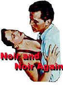

|

|
|
The Golden Bowl has been cited as an ISF Reference
DVD.
Click the ISF image for the complete list of ISF cited DVDs. |
CURRENT DVD REVIEWS |
| Love Me Tender/ C+, B+ |
| Flaming Star/ B, B |
| Charlotte Gray (SE)/ B+, A- |
| John Q. (SE)/ D+, A- |
| Say Anything (SE)/ B+, B |
| Man of the Century (SE)/ B+, A- |
| Collateral Damage (SE)/ C+, A- |
| S.O.B./ C+, B+ |
| Skin Deep/ C+, B |
| Two Family House/ B, B+ |
| Charlie's Angels (SE)/ C, B+ |
| Victor/Victoria (SE)/ A,B+ |
| Great Race, The/ B+, B+ |
| Lagaan/ C, C+ |
| Circus (SE)/ C+, A |
| To Gillian on Her 37th
Birthday/ B-, C+ |
| Audition (SE)/ A-,B |
| Kansas City Confidential/ B, C- |
| Amélie (SE)/ B+, A- |
| Big Heat, The/ B+, B+ |
| Fathom/ C+,C |
| Our Lady of the
Assassins/B+,B+ |
| Gosford Park (SE)/ A, A |
| Hombre/ B, B+ |
| Atlantic City/ A, A- |
| Monster's Ball (SE)/ B+, B+ |
| Majestic, The (SE)/ C+, A |
| Kate and Leopold (SE)/ B, B+ |
| A Beautiful Mind (SE)/ A-,A |
| Witness for the Prosecution/
B+, B |
| Memento (SE)/ A, A |
| Harry Potter and the
Sorcerer's Stone (SE)/ B+, A |
| Sorry, Wrong Number/ B, B |
| Key Largo/ A-, A- |
| Vanilla Sky (SE)/ C+, A |
| My First Mister (SE)/ B, B+ |
| Bite the Bullet/ B, C+ |
| Bob Le Flambeur (SE)/ A-, B |
| Black Knight (SE)/ C, A- |
| Vikings, The (SE)/ B, B |
| Ali/ B, A- |
| Gambler, The (1974)/ B+, B- |
| Fatal Attraction (SE)/ B+, B |
| It
Came From Outer Space (SE)/ B, B+ |
| Requiem for a Heavyweight/ B+,B+ |
| Calamity Jane/ A-, B+ |
| Barcelona (SE)/ A-, B |
| Cowboy/ B, C |
| Harvey Girls (SE)/ B+, B+ |
| Serendipity (SE)/ B, B+ |
| Texas Rangers/ C+, C+ |
| Dancing at the Blue Iguana (SE)/ C+, A- |
| Domestic Disturbance (SE)/ C, B+ |
| Bread and Tulips/ B+, B+ |
| Behind Enemy Lines (SE)/ B-, A |
| Metropolis (Anime) SE/ B, B |
| Accused, The/ B+, B+ |
| Projectionist, The/ C+, C+ |
| Tall Guy, The/ B+, B |
| Life on a String/ B+, D- |
| Mulholland Dr./ B+, B+ |
| Omaha (SE)/ C+, D |
| Life as a House (SE)/ B-,B |
| Spy Game (SE)/ B-,A |
| Sexy Beast (SE)/ B+, A- |
| Party, The/ B, C |
| Fresh (SE)/ A-, A- |
| Eat, Drink, Man, Woman/ B+, A- |
| K-Pax (SE)/ B+, A |
| Strictly Ballroom (SE)/ A-, B+ |
| Training Day (SE)/ B+, A (F) |
| Purple Noon/ B+, C+ |
|


Films on Disc has been sited by Classic Movies as one of their
Best New Links.

The editors of Britannica.com have selected Films on Disc as one of
the best on the Internet when reviewed for quality, accuracy of
content, presentation and usability.
© 2002 Films on
Disc
Stuart J. Kobak
ALL RIGHTS RESERVED. |
|
|
| |
|
Films
on Disc Internet Magazine includes DVD reviews and DVD feature
articles, plus Film, Movie Poster and DVD Links.
Films
on Disc
The
Ultimate DVD Review Site
Front
Cover
March 2000
Last
Update
August 17, 2002
In this issue......
 Film noir: The phrase hangs awkwardly on the tongue, shadowy
images peek out from behind half-closed doors. Click on the Noir
and Noir Again symbol for a look into the dark spaces of
Hollywood's revisiting of film noir.
Click
on the DVD MIA symbol for profiles of DVDs missing
in action.
Add films to the DVD MIA
Master List by filling out a simple form. Click
Here
|

March
21,
2000
What
better time to think of Peter Sellers' Oscar
nominated performance as Chance the gardener
in Being There(1979) Stephen
Smedley of Vashon, Washington nominates this fine
movie for a DVD release.
A
small, underrated British Scifi film, The
Day the Earth Caught Fire(1961) is
a DVD MIA sited by Peter Haller of Avon Lake,
Ohio.
Amongst
the lost souls of Film Noir, Steve Thompson is one
of the more memorable saps. Burt Lancaster is great
as the hulking ex-con caught in a web of deadly
spiders in Criss
Cross(1949). The tepid remake directed by
Steven Soderbergh, The Underneath(1995), is
already available on DVD from Universal.
|
|

March
20, 2000
Gregory
Peck, Anthony Quinn and David Niven star in The
Guns of Navarone(5/23/00). Columbia is
releasing the 1961 film in a special edition
featuring audio commentary from director J. Lee
Thompson and lots of other extras. Ah, yes,
anamorphic widescreen.
Don't
let the failure Man
in the Moon(5/30/00) at the box office
discourage you from catching this very strange and
moving portrait of comedy's lost soul, Andy Kaufman.
Director Milos Forman may not have the legend of
Larry Flynt this time out, but he does have an
amazing Jim Carrey performance. Universal is
packaging this as a special edition.
Click
for More DVD Alerts
|

Selections from the feature archive
include articles on
Akira Kurosawa, Frank
Darabont, Blonde
Bimbos, Hollywood
Street Gangs, or Vietnam:
The Hollywood Pariah, and many more....

Fred Astaire and Cyd Charisse
bring Silk Stockings to life, a remake of Ninotchka,
one of many films successfully turned into musicals by the Hollywood
dream factory. Read all about remakes into musicals by clicking on
the divine dancers.
|
|
 . .
The
Movie Poster Archive include extensive poster images from the
films of stars like Susan Hayward, Kirk Douglas, Katharine
Hepburn and many more. This month's featured star is John
Wayne
Burt
Lancaster
A look at the career of a
screen legend. Click on the image for a bio sketch
and many poster images.

DVD
Verdict recently reached the 400 DVD Review
milestone. Copies of Galaxy
Quest on DVD are offered as prizes in their
current contest. 
Click on the link to visit the judge's chambers.

Specializing in DVD reviews, DVD Authority boasts
almost 400 reviews in an easy to use, elegant,
interface.
 DVD
Gold DVD
Gold
specializes in Region 2 films, and spins gold about the latest
DVD releases in England and elsewhere. Check out the new site.
 Images
is a non-commercial Web site created for everyone
who enjoys movies and popular culture. Images is
published quarterly; however, new reviews will
appear each week, so check back often. Images
is a non-commercial Web site created for everyone
who enjoys movies and popular culture. Images is
published quarterly; however, new reviews will
appear each week, so check back often.
 A
love of movies drives this small DVD production
company, Synapse
Films, currently
specializing in horror and cult films. Watch for new
DVD releases of film festival independents as
Synapse branches out. A
love of movies drives this small DVD production
company, Synapse
Films, currently
specializing in horror and cult films. Watch for new
DVD releases of film festival independents as
Synapse branches out.
 Brad
Lang continues to add more interesting to the
extensive collection at Classic
Movies.
Everything from actors and actress to your favorite
directors is linked at the site. Brad
Lang continues to add more interesting to the
extensive collection at Classic
Movies.
Everything from actors and actress to your favorite
directors is linked at the site.
 Black
DVD Online interviews Thomas Bennett, DVD Quality
Control technician for Henninger Interactive Media.
Look for it starting 3/27/00. Black
DVD Online interviews Thomas Bennett, DVD Quality
Control technician for Henninger Interactive Media.
Look for it starting 3/27/00.
|
|